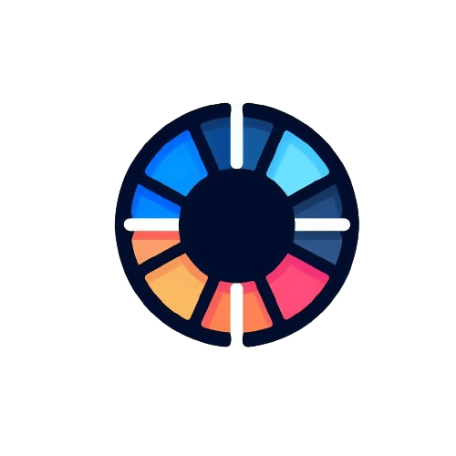

<div class="home">
    <app-navbar>
        <div navbar-start class="home-navbar-start">
            
            <h1>Colory</h1>
        </div>
        <div navbar-end class="home-navbar-end">
            @for (option of navbarOptions; track $index) {
                <h4>{{option}}</h4>
            }
        </div>
        <div navbar-end class="home-navbar-end-small" (click)="toggleMenu()">
            <svg  xmlns="http://www.w3.org/2000/svg"  width="24"  height="24"  viewBox="0 0 24 24"  fill="none"  stroke="currentColor"  stroke-width="2"  stroke-linecap="round"  stroke-linejoin="round"  class="icon icon-tabler icons-tabler-outline icon-tabler-menu-2">
                <path stroke="none" d="M0 0h24v24H0z" fill="none"/>
                <path d="M4 6l16 0" />
                <path d="M4 12l16 0" />
                <path d="M4 18l16 0" />
            </svg>
        </div>
    </app-navbar>

    <div class="dark-transparent-bg" [style.visibility]="isDarkTransparentBgOpen ? 'visible' : 'hidden'"></div>

    <div class="home-navbar-end-small-container-menu" [class]="{'show-home-navbar-end-small-container-menu': menuOpen}">
        <div class="home-navbar-end-small-container-menu-close" (click)="toggleMenu()">
            <svg xmlns="http://www.w3.org/2000/svg"  width="24"  height="24"  viewBox="0 0 24 24"  fill="none"  stroke="currentColor"  stroke-width="2"  stroke-linecap="round"  stroke-linejoin="round"  class="icon icon-tabler icons-tabler-outline icon-tabler-menu-2">
                <path stroke="none" d="M0 0h24v24H0z" fill="none"/>
                <path d="M4 6l16 0" />
                <path d="M4 12l16 0" />
                <path d="M4 18l16 0" />
            </svg>
        </div>
        @for (option of navbarOptions; track $index) {
            <h4>{{option}}</h4>
        }
    </div>

    <div class="home-body">
        <div class="home-initial-palette">
            @for (color of initialColorPalette; track $index) {
                <div class="home-initial-palette-color" [style.background-color]="color"></div>
            }
        </div>
    </div>

    <app-footer class="home-footer">
        <p footer-center>&#64;Erick Gabriel Urbizagastegui Alvarez - 2024</p>
    </app-footer>
</div>